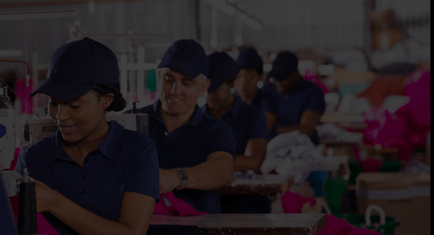

<section class="built_sec" data-aos="fade-up" data-aos-duration="1000" data-aos-delay="50">
  <div class="row">
    <div class="col-lg-6 col-md-6 col-sm-12 col-xs-12 p0">
      <div class="vedio_img">
        <!---->
        <video width="100%" height="320" autoplay loop plays-inline>
          <source src="../../../assets/images/old-poor-guy.mp4" type="video/mp4">
          <source src="../../../assets/images/old-poor-guy.webm" type="video/webm">

        </video>
      </div>
    </div>
    <div class="col-lg-6 col-md-6 col-sm-12 col-xs-12 p0">
      <div class="built_Txt text-center">
        <div class="built_txt_inner">
          <h2>We built the sourcing platform you were looking for</h2>
          <p>The fashion industry works continuously to meet the world’s
            increasing style desires as well as dictates the latests trends.
            Pushing fashion business boundaries to new heights calls for
            creative design and new material.
          </p>
          <p>THE SOURCING PROCESS <span class="eng">RE-ENGINEERED</span></p>
          <p>Traditionally, sourcing the right material and the right supplier
            was a tedious and time consuming process, requiring travelling
            to tradeshows and organising physical meetings at different
            locations. Fashion Sourcing aims to re-engineer the entire process.
          </p>
        </div>
      </div>

    </div>
  </div>
</section>